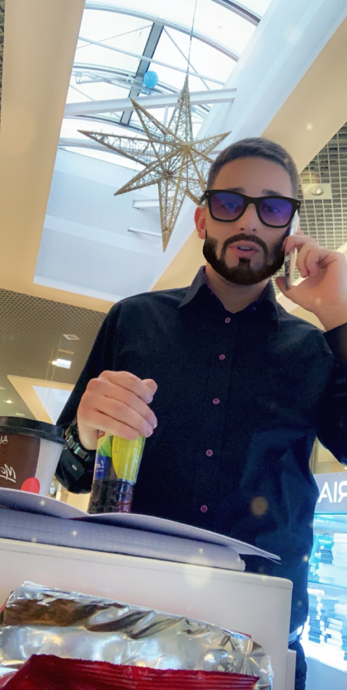
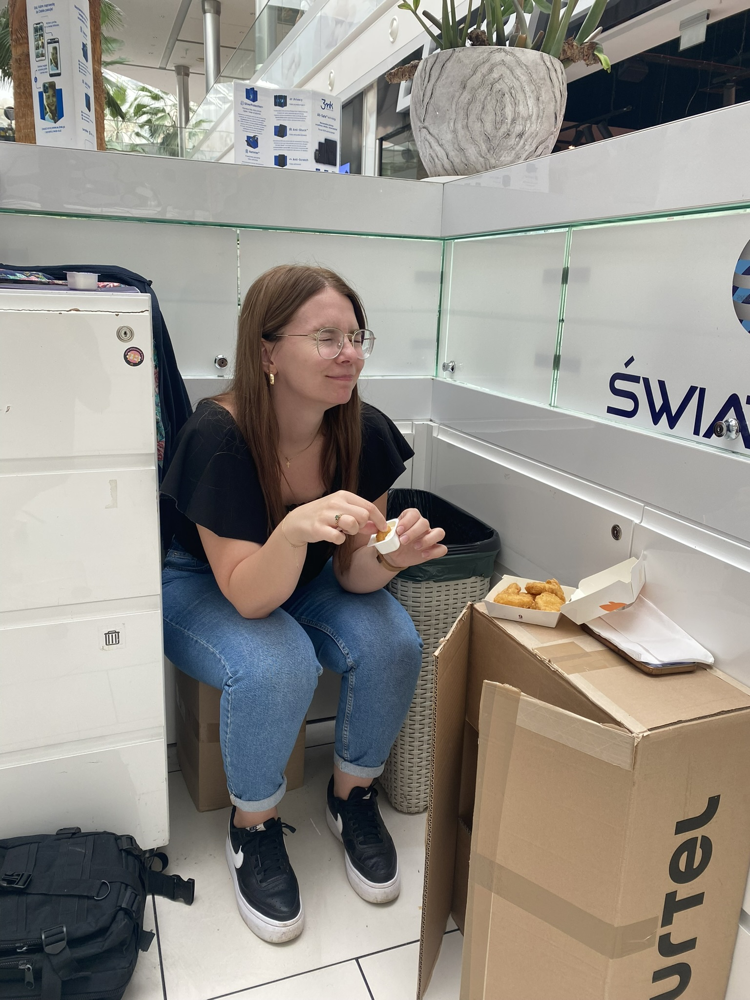
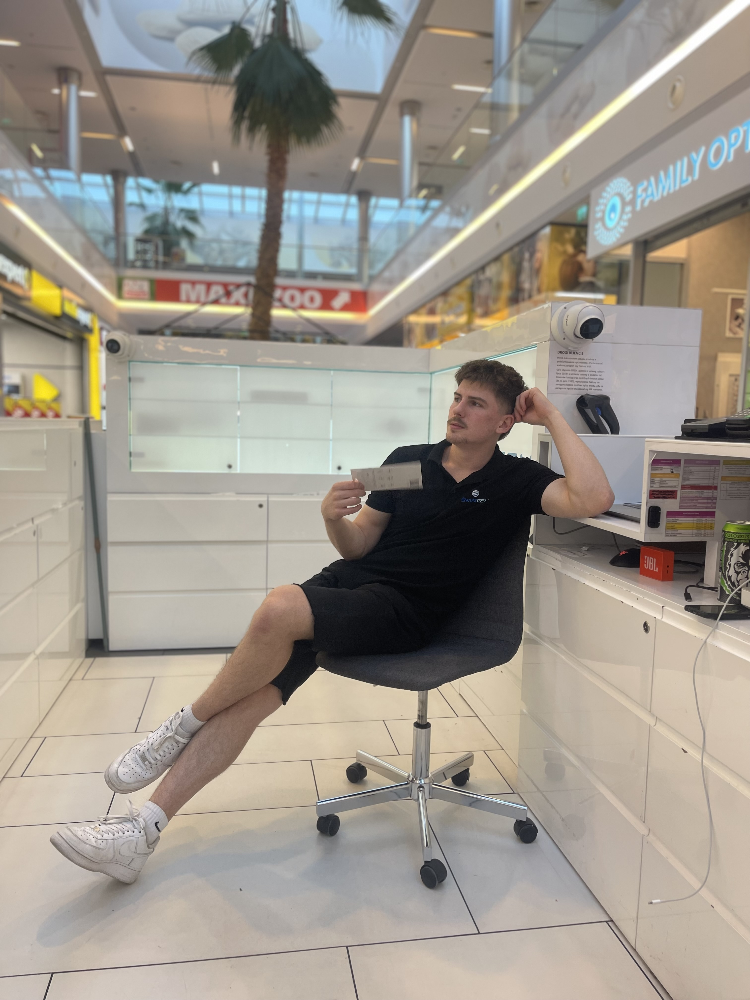
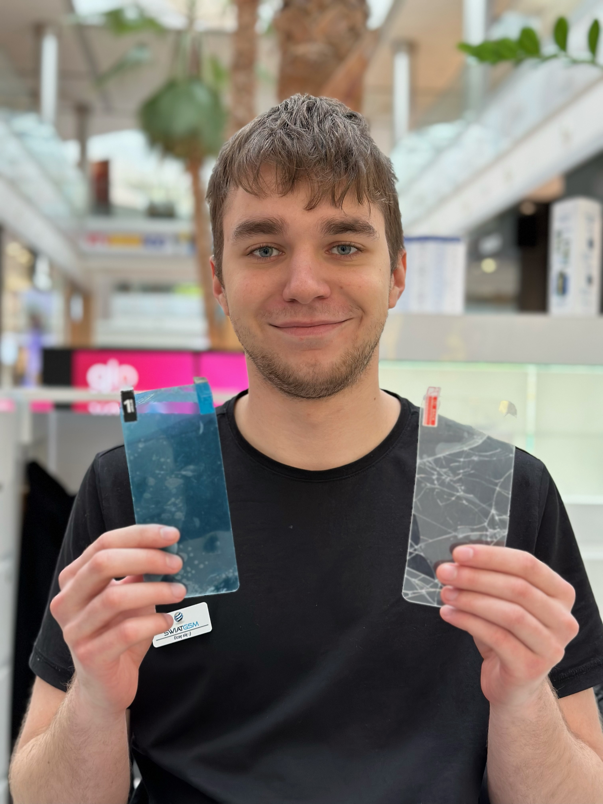

Szymon
2016 - teraz
Szef wszystkich szefów. Kiedy widzisz Szymona
w czarnym golfie lepiej szukaj schronu przeciwatomowego.
Dawid
06.03.2023 - teraz
Burmistrz wyspy GSM. Jego spojrzenie i uśmiech doprowadza
każdą kobietę do orgazmu. Największy podrywacz na świecie.
Iwonka
08.03.2023 - teraz
Trwa wiecznie w bólu egzystencjalnym. Jedynym lekiem na jej
liczne traumy jest Eutanazol. Poza tym dobra ciocia, która
poprawia wszystkim humor.
Łukasz
01.08.2023 - teraz
Starszy niż piramidy w Gizie. Przez tak długi żywot stroni od
kontaktów z ludźmi, jednak przebywanie na wyspie GSM go w
jakiś sposób odmładza.
Piotr
07.07.2023 - teraz
Młody osobnik, który zamienił Hawaje na wyspę świata GSM.
Potrafi zjeść 10 bagietek czosnkowych w ciągu połowy dnia.
Introwertyk, który potrafi w ciętą ripostę.
Julek
27.03.2023 - teraz
Człowiek widmo, pojawia się i znika. Jego supermoc to empatia
w stosunku do każdego człowieka. Legenda głosi, że jego mięśnie
rzeźbił sam Achilles.
Kuba
27.02.2024 - teraz
Młody, ekstrawertyczny, pełny energii i bardzo ekspresyjny osobnik.
Porusza się rydwanem na wrogich tablicach, przez co zgarnia nienawiść
Toruńskich obywateli.
Emilka
07.2016 - teraz
Królowa lokalu GSM. Z pozoru delikatna i spokojna kobieta, ale kiedy
nie oddasz pokłonu przed licznikami rozniesie Cię w drobny mak.
Samuel
12.04.2023 - teraz
Legenda głosi, że to on stworzył Matrixa. Mimo młodego wieku złamałby
zabezpieczenia Pentagonu. Naprawi każde urządzenie, od zepsutego
iPhone'a po samochód Piotra.